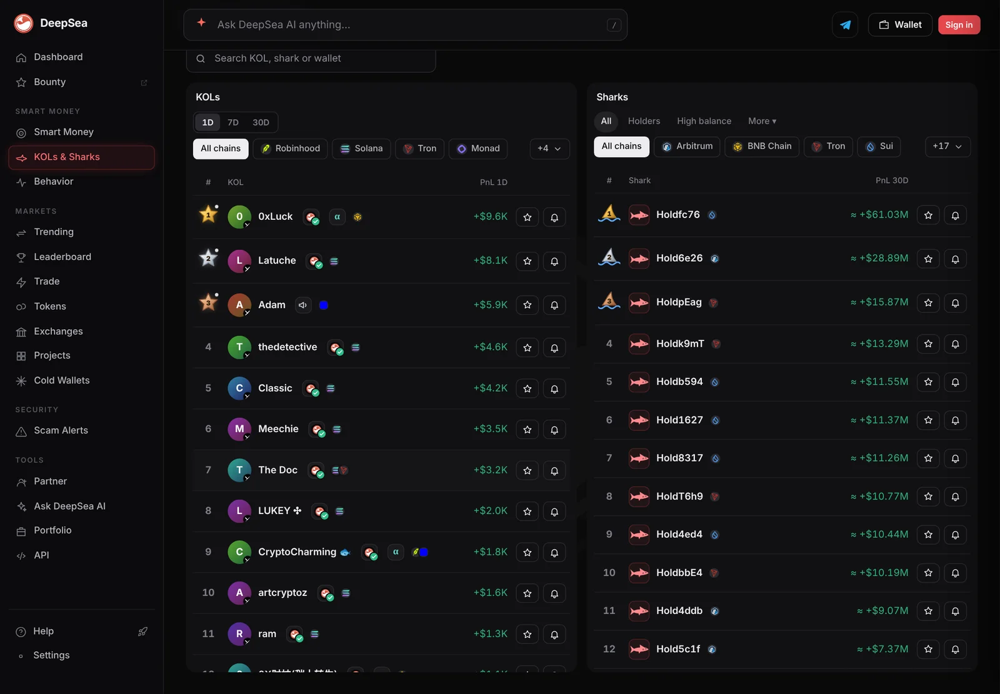
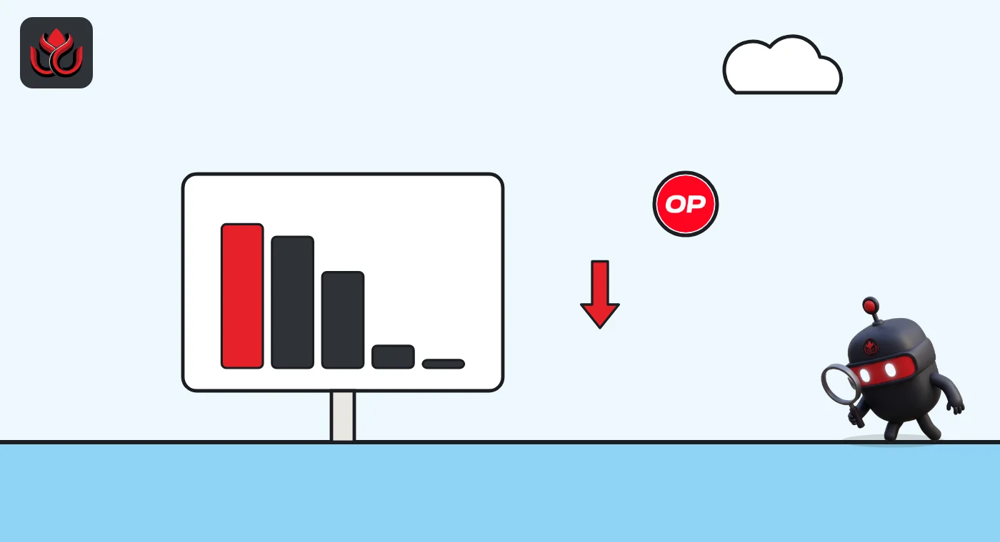

71 of 100 shark wallets lost money on closed trades in crash week, $5.85 million in all
DeepSea's realized profit table shows large traders came out behind as bitcoin fell. Three wallets made up 63% of the loss, and one Optimism wallet won 3 of 61 trades.
Key points
- Of 100 shark wallets with a 7-day figure in DeepSea's live table, 71 lost money, 27 made money and 2 broke even. Net: minus $5.85 million.
- The worst, a wallet on Optimism, lost $1.73 million on 61 closed trades, only 3 of them winners.
- Optimism sharks lost the most as a group (minus $2.09 million), then BSC (minus $1.90 million) and Ethereum (minus $1.34 million).
 What DeepSea's data shows
What DeepSea's data shows
DeepSea publishes a realized profit and loss table for wallets in its live feed. Realized means closed trades only, priced first in, first out. The table LC Insight read was made at 12:32 a.m. ET on November 6. It has 625 wallets; 100 of the sharks (large, active traders) have a 7-day figure.
Those 100 lost a net $5.85 million in seven days. 71 lost money, 27 made money and 2 were flat. They closed 7,944 trades, 3,159 of them winners, about 40%.
Three wallets made $3.69 million of the loss, about 63%: one on Optimism (minus $1.73 million, 3 wins in 61 trades), one on BSC (minus $1.03 million, 0 wins in 2 trades) and an Ethereum wallet ending in 4312 (minus $933,600, 31 wins in 51 trades).

Data: DeepSea (desea.io), checked November 6, 2026, 12:32 a.m. ET.
By chain
Optimism had the most shark wallets in the table, 25, and the biggest loss. Arbitrum's 11 sharks finished slightly ahead, at +$8,200, and Berachain's three made $7,500. On Ethereum, 8 of 17 sharks made money but the group still lost $1.34 million.
One caution: the second-best Ethereum shark in the table, at +$80,021, is an address that Etherscan labels Binance 151, an exchange wallet. At 12:33 a.m. ET it sent 760,522 RLUSD to another Binance wallet. Transfers like that are not trades by one investor, so results for individual wallets should be read with care.
Shark 7-day realized PnL by chain
US$ million
Wallets with a 7-day figure; table made November 6, 2026, 12:32 a.m. ET. LC Insight sums. Source: DeepSea live PnL.
What the 4312 wallet did next
Losses did not stop the wallet ending in 4312 from moving size. At 12:28 a.m. ET on November 6, Etherscan shows it supplied 3,999,999 USDT to the Aave V3 pool on Ethereum and received 4,000,679 aEthUSDT, Aave's interest-bearing receipt token. A deposit like this earns interest; the data does not show why the wallet made it.
CoinGecko showed bitcoin at $75,552 at 12:46 a.m. ET, down 6.0% in 24 hours.

LC Insight analysis
This section is our reading of the facts above, not a statement of fact.
- We think the split is clear: in the week of the drop, most large on-chain traders closed trades at a loss, while the biggest perp traders on Hyperliquid posted large gains.
- Realized figures miss open positions. A shark that is still holding a falling token shows no loss here yet.
- The table mixes very different wallets, including at least one exchange address, so totals are a rough gauge, not a scorecard.
What's next
- Whether the 4312 wallet moves its new Aave USDT deposit
- Optimism sharks, the weakest group this week
- The 30-day shark total, which was minus $10.7 million on November 4
Disclaimer. This article is based on public information and the sources listed below as of the update time shown. It is for information only and is not investment, legal or tax advice. Figures may change as companies and authorities publish new data.
Sources
- DeepSea, live realized PnL table (made November 6, 2026, 12:32 a.m. ET)
- DeepSea, live feed events (read November 6, 2026, 12:34 a.m. ET)
- Etherscan, transaction 0xeed4...57f0, Aave V3 supply of 3,999,999 USDT (November 6, 2026, 12:28 a.m. ET)
- Etherscan, transaction 0xc2e1...f5218, 760,522 RLUSD from Binance 151 to Binance 152 (November 6, 2026, 12:33 a.m. ET)
- CoinGecko, Bitcoin (BTC) price (November 6, 2026, 12:46 a.m. ET)